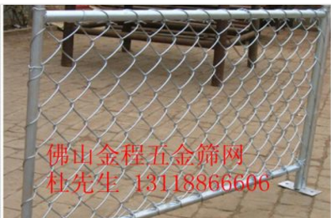
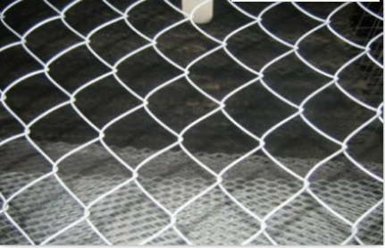
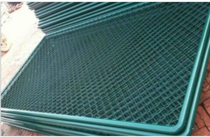
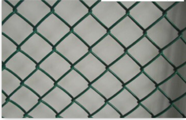

佛山勾花网的价格
wj666导读：本篇文章为您介绍了佛山勾花网的价格的信息，通过浏览本页面您可以更好的了解佛山勾花网的价格。
佛山市南海区大沥盐步金程五金筛网制品厂是一家集生产、深加工、销售于一体的丝网生产专业企业。借助于得天独厚的环境优势和广大同仁的支持与帮助，加上全体员工的奋发努力，使我公司迅速发展成为一个技术力量雄厚、丝网经验丰富、检测手段齐全、可生产多种丝网产品的企业。专业勾花网得安装、勾花网得生产厂家、好得勾花网批发，金程五金为您一条龙服务，一个电话上门安装，实地考察。给您质量的保证。热线咨询：联系电话(微信同号)：18934371334(业务:马小姐)；18664220999(业务:尤小姐)；13118866606(总经理:杜先生)。
" style="margin-left:250px;">
本公司主要生产的勾花网产品有：不锈钢勾花网：该产品用处广泛，饲养鸡、鸭、鹅、兔及动物园围栏。机械设备的防护，高速公路护栏，体育场所围网，马路绿化带防护网，仓库。勾花网编织及特点：以优质低碳钢丝、不锈钢丝、铝合金丝、PVC丝钩编而成，网孔均匀、网面平整、美观大方、网幅宽，丝径粗，不易腐蚀寿命长，编织简洁、美观实用。
勾花网又名菱形网、斜方网勾网、活络网
材 料：优质低碳钢丝、镀锌丝、PVC丝,PE丝
编 织：钩遍而成编织简洁，安装拼接灵活，美观实用。
勾花网规格：丝径1.2-5网孔：25 40 50 55 60 65 76 100等特殊规格可订做。
特 点：网材质优良、网孔均匀、网面平整，编织简洁、美观实用
勾花网品种：不锈钢勾花网、电镀锌勾花网、热镀锌勾花网、PVC勾花网、包塑勾花网
经久耐用便于安装的镀锌勾花网多用作道路护栏网设施和装饰等场所
不锈钢勾花网材质：优质低碳钢丝，镀锌丝，铁丝，不锈钢丝。镀锌勾花网特点：不易腐蚀，寿命较长，实用性强，网孔均匀，网面平整，编织简单，美观大方，网丝优质，网幅较宽，丝径较粗。

电镀锌勾花网：该产品用处广泛，饲养鸡、鸭、鹅、兔及动物园围栏。机械设备的防护，高速公路护栏，体育场所围网。勾花网又名菱形网、斜方网勾网、活络网
材 料：优质低碳钢丝、镀锌丝、PVC丝,PE丝
编 织：钩遍而成编织简洁，安装拼接灵活，美观实用。
勾花网规格：丝径1.2-5网孔：25 40 50 55 60 65 76 100等特殊规格可订做。
特 点：网材质优良、网孔均匀、网面平整，编织简洁、美观实用
勾花网品种：不锈钢勾花网、电镀锌勾花网、热镀锌勾花网、PVC勾花网、包塑勾花网。
用 途：该产品用处广泛，饲养鸡、鸭、鹅、兔及动物园围栏。机械设备的防护，高速公路护栏，体育场所围网，马路绿化带防护网，仓库、工具间冷藏、防护加固物、球场、、公园、动物园围栏、海洋捕鱼栅栏以及建筑工地围栏，河道，边坡固定泥土（岩石），住宅的安全防护等。

勾花护栏网：该产品用处广泛，饲养鸡、鸭、鹅、兔及动物园围栏。机械设备的防护，高速公路护栏，体育场所围网。勾花护栏网
体育场护栏网规格：
(1). 包塑丝经 3.8mm
(2). 网孔 50mm X 50mm
(3). 尺寸：3000mm X 4000mm
(4). 立柱：直径60/2.5mm钢管
(5). 横柱：直径48/2mm钢管焊接
(6). 连接方式：焊接
(7). 防腐处理:防锈底漆+高级金属漆 产品色彩鲜亮抗老化 耐腐蚀 规格齐全.网面平整，强力张紧，不易受外力撞击变形。
体育场护栏网优点：体育场护栏网色彩鲜亮 抗老化 耐腐蚀 规格齐全. 网面平整，强力张紧，不易受外力撞击变形。现场施工安装, 体育场护栏网最大特点是灵活性强，可根据现场要求随时调整造型和尺寸。
体育场护栏网主要市场：对质量要求较高的网球场地篮球场地 综合场地围网

各式各样的勾花网在金程应有尽有。只有您想不到，没有我们做不到，一流的安装服务。高质量的生产团队，给您一个安全的保证。
佛山市南海区大沥盐步金程五金筛网制品厂是一家集生产、深加工、销售于一体的丝网生产专业企业。借助于得天独厚的环境优势和广大同仁的支持与帮助，加上全体员工的奋发努力，使我公司迅速发展成为一个技术力量雄厚、丝网经验丰富、检测手段齐全、可生产多种丝网产品的企业。专业勾花网得安装、勾花网得生产厂家、好得勾花网批发，金程五金为您一条龙服务，一个电话上门安装，实地考察。给您质量的保证。热线咨询：联系电话(微信同号)：18934371334(业务:马小姐)；18664220999(业务:尤小姐)；13118866606(总经理:杜先生)。
以上是关于佛山勾花网的价格的介绍，更多相关信息，请咨询在线客服。